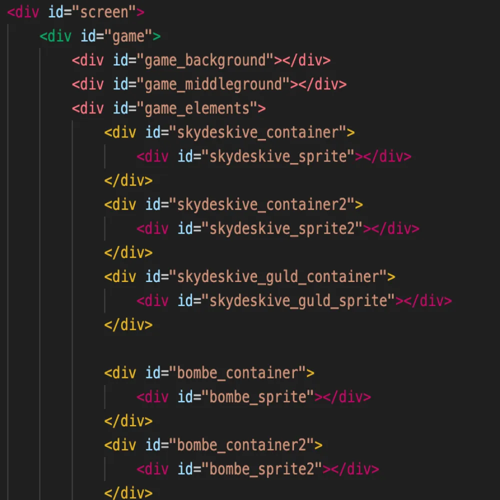
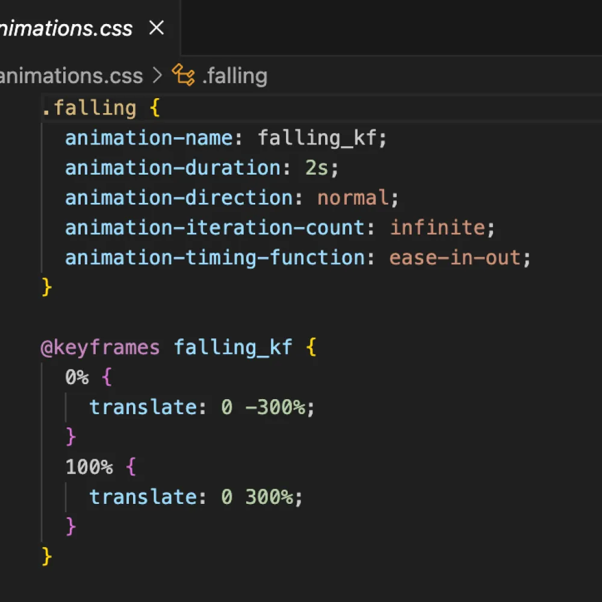
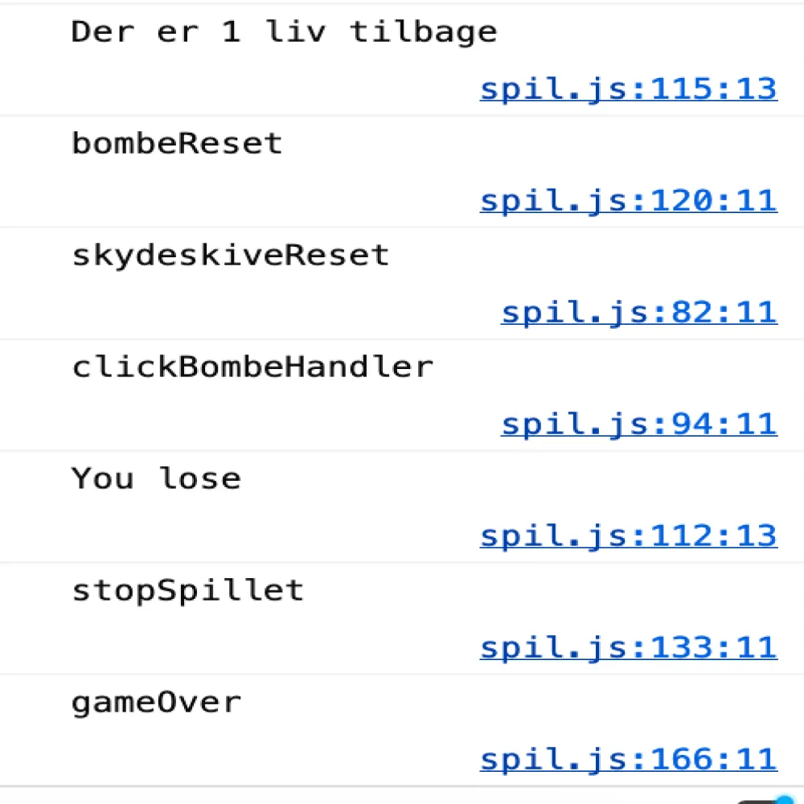
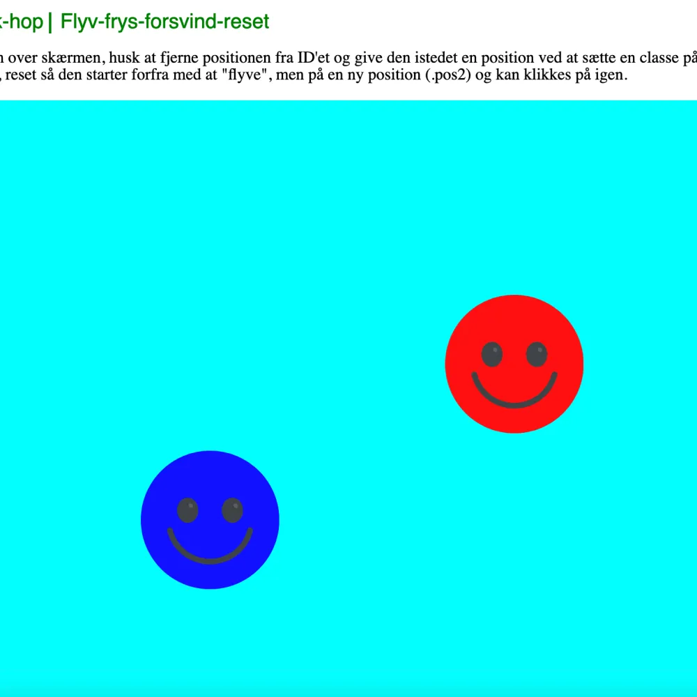

Tema 04_Animation
Temabeskrivelse
I tema 4 lærte vi om programmeringssproget javascript, som man kan bruge til at gøre en website mere dynamisk og spændende. Vi brugte det til at designe og udvikle et lille spil, udfra vores eget koncept og idé. Vi kiggede på andre spildesigns, og lærte om teorier og konventioner, inden for design af UI-elementer, figurelementer, baggrundsdesign og kompositionsteknikker. Løbende i processen udviklede vi vores idé til koncept i Adobe Illustrator, hvor vi lærte at rentegne grafikken til vores spil. Vi kiggede indvidere på html struktur, css animationer og javascript til at animere vores spil.
Hvad har jeg lært
- Viden om nogle af de digitale udviklingsformater man bruger i erhvervet(*.svg, *.wav, *mp3)
- Anvendelse af en række frontend-teknologier(css, javascript, adobe audition og illustrator)
- Grundlæggende viden om design af spil-elementer. Vi kiggede på baggrundsdesign (atmosfærisk perspektiv, kontraster, focal point, rule of thirds). Figurur og karaktur designs (babybias, solid drawing, line of action, asymmetry, bouba og kiki). Start og slutskærme. Og skitserings- og idégenereringsteknikker, hvor vi lavede moodboards og en paperprototyper.
- Grundlæggende medellerings- og struktureringspricipper i form af aktivitetes- og state machine diagrammer
- Hvordan man laver css-animationer udfra @keyframes
- Grundlæggende javascript (funktioner, metoder (addClass/removeClass), variabler (point,liv,speed), events (load, click, animationend, animationiteration), betingelser (if-else) og math.random.)
Opgaver
Min Adobe Illustrator fil, med alle spilelementerne
Aktivitetsdiagram og State Machine diagram for mit spil
Assetliste med elementer fra mit spil
Version 2.0 (klik på god og ond)
Version 3.0 (med genstart, point og liv som tal)
Version 4.0 (med random position, delay og genstart ny med random position)
Version 5.0 (med timer og liv som billeder)
Version 6.0 af dit spil (med stop spillet når tiden er gået eller 0 liv)
Version 7.0 af dit spil (med flere elementer som gør det samme)
Version 8.0 af dit spil (spil med start- & slut- og genspil)
Version 9.0 af dit spil (med alt grafik og lyde)
Gennemgang af tema
Idé og koncept
I tema 4 skulle vi lave vores eget lille spil. Vi startede med at research og udvikle vores idé og koncept. Jeg startede med at fine en stil. Jeg designede min figur ud fra inspiration fra den japanske Kawaii stil, som er når karakterers træk bliver meget overdimensionelle og beskrevet som nuttet. Mit spil tog inspiration og er designet ud fra flat-design med en lille smule retrodesign. Altså et minimalistisk design, med todimensionelle elementer, men med humoristiske materialer og dekorative elementer og teksturer.
Da vi skulle udvikle et spilkoncept, startede vi med at overveje spillets historie, fra start til slut. Altså hvordan skal man kunne vinde, hvordan skal man kunne tabe og hvilke UI-elementer der skulle med. Derefter begyndte jeg på mine skitser og lavede en papirsprotoype, med udklippede spilelementer, som var en sjov måde at visualisere spilkonceptet på en meget simpel og nem måde.
Da jeg havde beslutet mig om hvordan mit spil skulle fungerer, begyndte jeg at rentegne mine spilelementer i Adobe Illustrator. Her lærte jeg om formgivning, og hvordan man kan designe figure og elementer. Samt baggrund som var lavet ud fra atmosfærisk perspektiv, med mørke farver i forgrunden og lysere i baggrunden. Senere i processen lavede vi titelskærm, spilskærm, vinderskærm og taberskærm. Min baggrund blev lavet udfra idéen om at have en forgrund, mellemgrund og baggrund.
Mens vi arbejdede på vores koncept, blev vi også introduceret for css animationer, hvor vi lavede 16 animations, som handlede om at vi vha. keyframes kunne få badeboldene til at lave forskellige animationer i boksene.
Planlægning af interaktive flows
Inden vi gik i gang med at kode vores egne spil, skulle vi lave et State Machine Diagram og et Aktivitetdiagram. Et State Machine Diagram er en model, der bruges til bedre at have et overblik over hvordan et spil skal forløbe sig. Man kan nemt se hvordan spillets elementer skal forholde sig til hinanden, ud fra et event. Et eksempel kunne være, at hvis man klikker på en god ting, får man et point og hvis man klikker på en dårlig ting, mister man et liv. Forklaret på en anden måde, at hvis du er i funktionen "startSpil" og du klikker på en god ting, så rygere du videre til funktionen "ClickSkydeSkive". Eller hvis du klikker på en dårlig ting flere gange, så ryger du i funktionen "gameOver" og "stopSpillet". Aktivitetsdiagram er lidt mere simpelt. Det en model som giver indblik i hvordan forskellige ting i spillet forholder sig til hinanden. Det beskriver spillets flow kan man sige. Eksempelvis kan man se at når spillet starter, så begynder elementer at falde ned. Og når du trykker på en god ting, så kommer der en lyd og du får et point.
Opsætning af html og css animationer
Da vi så begyndte at animere på vores spil, lærte vi html struktur i form af at have en container, med en sprite inden i, hvor der ligger vores spilelementer i form af .svg'er. Det gør man fordi så kan man animere på containeren og spriten hver for sig. Eksempelvis kan containeren rykke hen over skærmen, mens spriten med billede i roterer eller forsvinder. Man kan faktisk se det på billedet hvor vi lavede css animationer, for at få et element til at falde. Man gør det ved at give animationen et navn, herfter kan man vælge om animationen skal gentage sig (animation-iteration-count), hvor langt tid animationen skal tage (animation-duration) og andre funktioner. Herefter skal man lave en keyframe for animationen hvor man kan styre hvordan animationen skal se ud. Eksempelvis kan man bruge scale, opacity eller translate i dette tilfælde. Senere skal man så refererer til animationerne på spilelementerne i javascript.
Herefter lavede vi en række øvelser hvor vi brugte javascript til at styrer animationerne på en "god" og en "dårlig" smiley. Vi testede forskellige animationer, lavede fejlfindingsøvelser, alt sammen for at få det basale fra javascript på plads, inden vi skulle begynde på vores egne spil. Når animationerne ikke virkede eller der var en fejl i javascriptet, var det en god idé at kigge på inspect console, hvor man kunne følge med i de forskellige javascript funktioner. Man kunne f.eks se når sidenVises eller checke at javascriptet registrerer dit click/mousedown.
Container og sprite
Css animationer
Inspect console
Sæt animationer på
Grundlæggende Javascript
Vi startede med at lære at lave en window.addEventListener("load", sidenVises); som gør at siden "loader" og navnet på funktionen sidenVises kommer frem i consolen. Når man så tilføjet et event med metoden addEventListener, kan man så lave funktionen til. Som skal have samme navn. Så function sidenVises efterfulgt af console.log(sidenVises). Her kan man så lave document.querySelector, med enten containeren eller spriten efter hvad man vil animere. og enten tilføje en animation (classList.add(fald eksempelvis)) eller lave en addEventListener med click eller mousedown, som gør at når du klikker så kommer der en ny funktion. I javascript er der forskellige events man kan referer til. Eksempelvis animationstart, animationend eller animationiteration. Som er tre events der når vi lytter efter om en animation starter, slutter eller gentager sig.
Når en animation er færdig er man nødt til at fjerne alle klasserne på elementet, vha. navn.classList = "; og når så gerne vil sætte en ny position og animation på elementet skal man lave det der hedder et force reflow vha. navn.offsetLeft; ellers kan man ikke få lov til både at remove og add en class i samme funktion.
Da vi næsten var færdige med spillet, var der en række ting man kunne gøre for at spillet bliver mere komplekst og hertil også lidt sjovere. Vi arbejde med at sætte point på når man rammer et godt element og mister et liv, når man rammer en dårlig. Hertil lærte vi om if else betingelser. Som grundlæggende bare er når en betingelse er opfyldt så sker der en ting, ellers sker der noget andet. Eksempelvis på billedet der er du røget i gameOver. Her checker den så om du har mindre end eller ligmed 0 liv, for hvis du har det så tabte du pga. at du ikke havde flere liv. Ellers så fik du ikke nok point da tiden gik ud. If/ else brugte vi også til at styrer hastighed på spilelementerne og hvor mange point man skulle have for at vinde. Vi lavede også en math.random som gjorde at man kunne sætte tilfældige postitioner på spilelementerne
Javascript kode